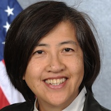

<div id="speakers">
<div class="cell">
<p><strong>Chantale Yokmin Wong</strong> served as Vice President for Administration and Finance and Chief Financial Officer at the Millennium Challenge Corporation (MCC) from October 2011 until September 2014. She was the senior operating official providing leadership and oversight to MCC’s administrative services, financial management and budgeting processes, human resources and retention, information technology infrastructure, overseas administration, procurement, contracts and grants management, and security.</p>

<p>Chantale was the agency lead of the Obama Administration’s Open Government initiative, and led the team that released MCC’s development data directly through an openly published web service. MCC was subsequently recognized as the most transparent aid agency in the world in 2013, according to Publish What You Fund. Also under her leadership, and in her role as CFO, MCC regained its clean audit opinion of the annual its financial statement.</p>

<p>Prior to her presidential appointment at MCC, she was the budget director of the National Aeronautics and Space Administration (NASA), was deputy budget director at the U.S. Department of Treasury, and was special assistant to the Environmental Protection Agency Administrator for budget and implementation of the Clean Water Act. She began federal career as a program and policy analyst at the White House Office of Management and Budget (OMB), and later became the chief of staff to OMB Director Alice Rivlin, a position she held during the 1995-96 budget crisis.</p>

<p>Chantale created, led the design and implementation, and managed the multiple-agency production deployment of the Budget Formulation and Execution Manager (BFEM) web-based automation tool. Today this program is in operation at the U.S. Departments of Homeland Security, Justice, State, Transportation, Treasury, and Veterans Affairs, as well as eight other departments and agencies. Chantale was also intimately involved in the financial rescue of Fannie Mae and Freddie Mac, and in developing the framework of the financial instruments of the Trouble Asset Relief Program.</p>

<p>Both BFEM and TARP were part of her work at Treasury, and BFEM received the President’s (Bush) Quality Award for innovation in 2008.</p>

<p>Chantale joined the staff of the Asian Development Bank (ADB) in Manila in 1999 as an environment specialist to ensure that the bank’s assessments complied with their environmental and social policies. She also led development and publication of ADB’s first Asian Environment Outlook (2001), and was subsequently appointed by President Bill Clinton to represent the United States as Alternate and then Acting Executive Director of the ADB, where she served until 2002.</p>

<p>Ms. Wong holds a master in public administration from the Kennedy School of Government at Harvard, where she was a Littauer Fellow and a Womens Leadership Fellow. She also earned as a masters in environmental engineering from the University of California, Berkeley with a focus on water and wastewater management. She earned her undergraduate degree in civil and structural engineering from the University of Hawaii.</p>
</div>
</div>